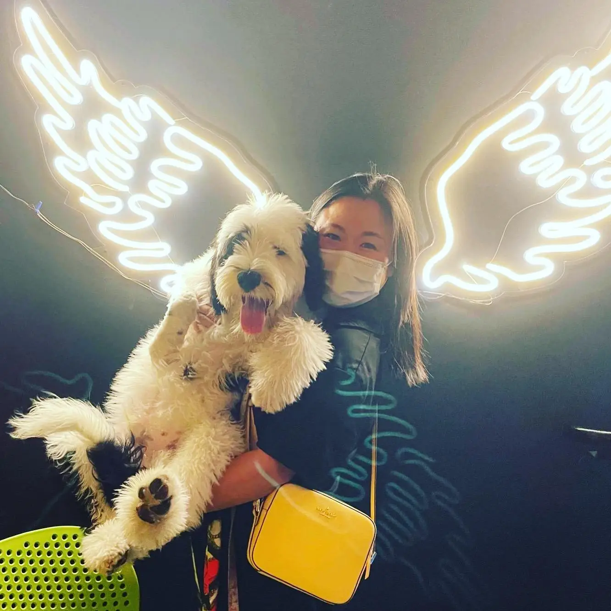
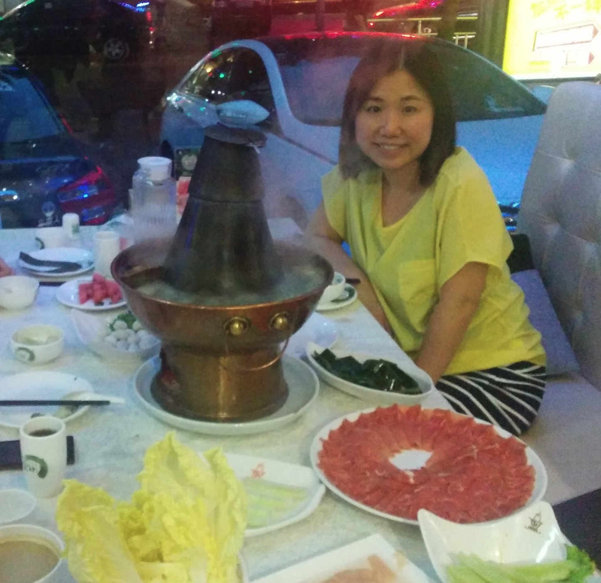

My background
About


With over 20 years of experience in multimedia and user experience design, I have a strong background in creating innovative solutions for a wide range of applications. My expertise includes 10 years of product designing IoT products. Throughout my career, I've successfully collaborated on numerous projects, applying a unique design style tailored to meet user needs. My academic background in counseling and integrated art has provided me with valuable insights into user psychology and visual aesthetics.
Top skills
Wireframing • Prototyping • User Interface Design • Information Architecture • User Experience Design (UED)
A Few of My Favorite Things
When I’m not designing, I’m usually hanging out with my dog, Mochi, or enjoying a good hotpot meal with friends and family. These moments keep me grounded, inspired, and remind me of the importance of joy in everyday experiences—something I always try to bring into my work.
Experience
Founding Product Designer
Fam-it
Jun 2016 - Dec 2021 · 5 yrs 7 mos
- Founded and successfully launched Fam-it, securing funding through a well-executed Kickstarter campaign.
- Designed product features, including IoT integration, contributing to a successful launch and positive user feedback.
- Defined project scope, objectives, and led UX/UI efforts to achieve a user-friendly platform, resulting in favorable user experiences.
- Developed strategic plans to guide project success and effectively managed the team to ensure smooth operations throughout the development process.
User Experience Supervisor
Sky Light Holdings Limited
Dec 2011 - Nov 2016 · 5 yrs
- Led a dynamic UX team, overseeing mobile, PC, and IoT product designs, enhancing user engagement and satisfaction.
- Developed detailed functional specifications and intuitive wireframes, streamlining development and improving usability.
- Conducted user research and testing, providing insights that shaped user-driven features and optimized onboarding.
- Trained and managed the UX team, fostering collaboration and ensuring successful project execution.
User Experience Designer
Wisers Information Limited
Oct 2010 - Nov 2011 · 1 yr 2 mos
- responsible for product feature design, design mockups, usage scenarios, prototypes, specifications, product wireframe and flowchart, information and UI architectures , front- end coding
Web Designer
88db.com
Aug 2009 - Oct 2010 · 1 yr 3 mos
- Responsible for UI/UX design, front-end coding, web revamp and maintain
User Interface Designer
Aquent
Jan 2009 - Aug 2009 · 8 mos
- Work closely with Philips design team, responsible for design screen flow, prepare prototype, interface and graphic design
User Interface Designer
DCIVision
Aug 2007 - Jan 2008 · 6 mos
- Responsible for design screen flow, prepare prototype, interface and graphic design, Web maintain
Education
- Calbright College - Certificate in Data Analysis (Currently Studying)
- IxDF - Interaction Design Foundation - Certificate in UX Design for Virtual Reality
- HKU SPACE - Postgraduate Diploma in Integrated Arts
- Hong Kong Institute of Christian Counselors - Bachelor in Christian Counseling
- The Chinese University of Hong Kong, School of Continuing Studies - Diploma in Fine Arts
- Hong Kong Christian Service Kwun Tong Vocational Training Centre - Advanced Certificate in Illustration and Design